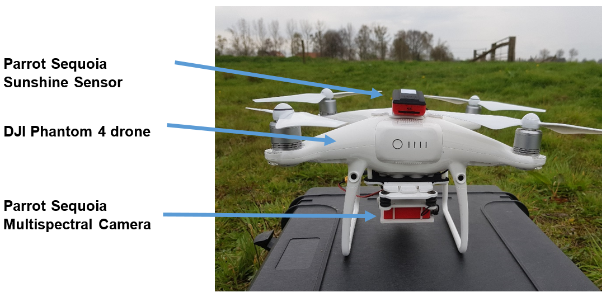
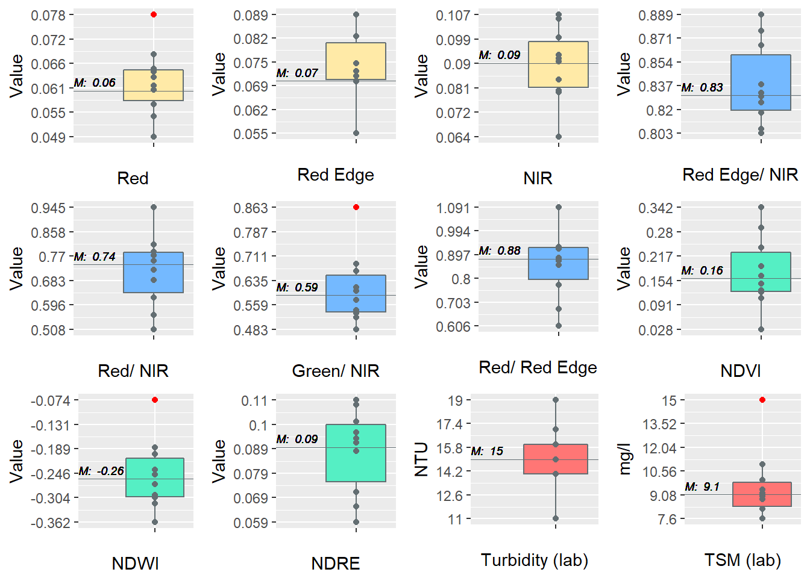
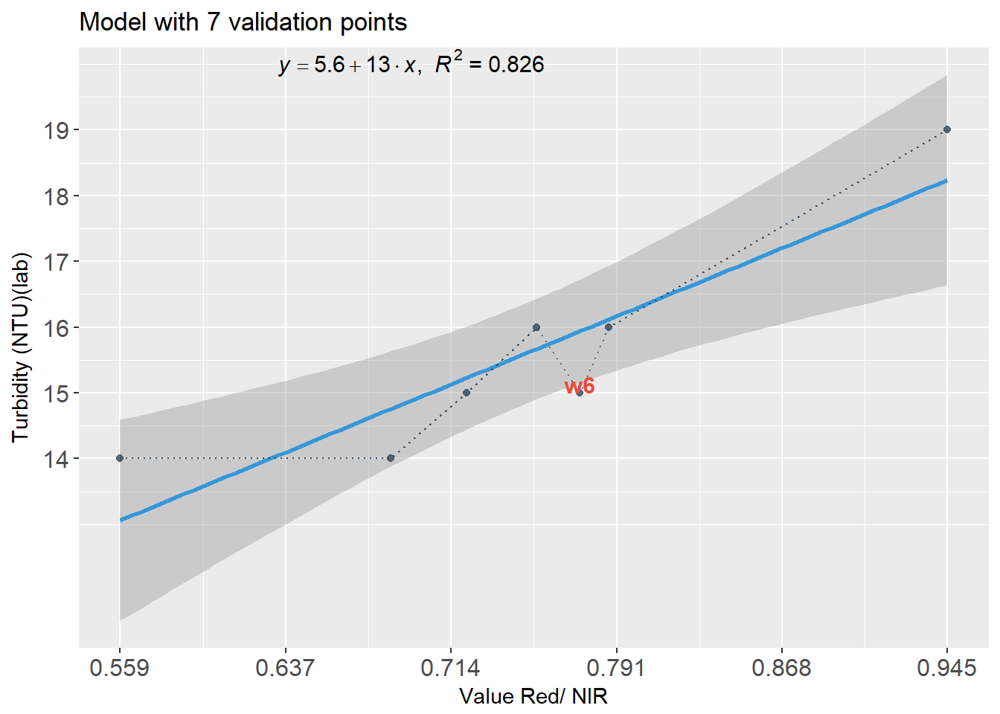

Parrot Sequoia multispectral camera mounted under a drone.
*10 validation points (w1~w10)
Study area Lollebeek (lat: 51.489167,long: 6.055111)
Field campaign were carried out on April 10, 2018.
Reflectance maps of Green, Red, Red Edge and NIR bands (scale is based on specific percentile range )
Calculated band ratio and band index reflectance maps (scale is based on specific percentile range )
Descriptive statistics

Boxplots from 10 validation points. M = median
Best prediction model
No relationship can be found between turbidity and suspended matter in our case. However, there is a relationship between turbidity and the Red/ NIR ratio. Three validation points (w2, w4, w7) were excluded to create the linear regression model below.

Turbidity equation
Based on the previous regression model the following turbidity equation can be derived:
\(Turbidity (NTU) = 5.6 +13.4(\frac{Red}{NIR}) \pm 0.7\)
Applying the turbidity equation to the Red/ NIR ratio reflectance map resulted into the turbidity coverage map below. The turbidity range scales from 14 to 19 NTU (darkest to brightest colour)
Interactive turbidity map
Turbidity map zoomed on two locations